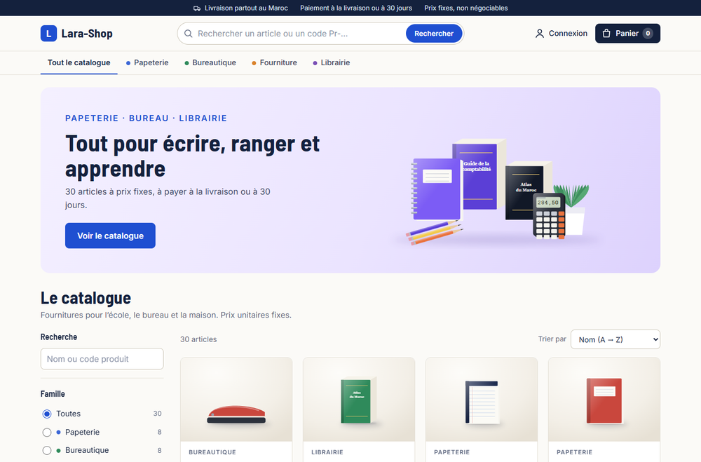

Guide pédagogique · Laravel 12 · LP-ISIR 2026/2027
Comprendre Lara-Shop, une boutique en ligne écrite avec Laravel
Ce guide explique, fichier par fichier, l’application terminée de ce dossier : une boutique de papeterie et de fournitures de bureau construite à partir du sujet PDF (Client, Commande, Fournisseur, Produit, Ligne Commande). Chaque fonctionnalité est suivie depuis le clic de l’utilisateur jusqu’au résultat, avec de vrais extraits du code.
Il s’ouvre directement dans le navigateur : inutile de lancer Laravel pour le lire.
La partie 1 donne une vue d’ensemble : lancer le projet, se repérer dans les dossiers, comprendre la base de données et le trajet d’une requête. Les parties 2 (boutique) et 3 (administration) consacrent un chapitre numéroté à chaque fonctionnalité, toujours en six étapes : point de départ, fichiers, ce qui se passe, résultat, ce qui peut mal tourner, notions. La partie 4 rassemble les notions Laravel, le glossaire et le tableau des routes.
1. Ce que fait l’application
Lara-Shop vend 30 articles répartis en quatre familles (Papeterie, Bureautique, Fourniture, Librairie). Trois types de personnes l’utilisent :
| Qui | Ce qu’il peut faire | Où |
|---|---|---|
| Visiteur (non connecté) | Parcourir et filtrer le catalogue, voir une fiche produit, remplir un panier. | /, /produits/…, /panier |
Client (compte customer) | Tout ce qui précède, plus : commander (paiement à la livraison ou à 30 jours), suivre et annuler ses commandes, gérer ses favoris, son profil, télécharger ses données (CSV, Excel, PDF). | /commande, /mes-commandes, /favoris, /profil, /mes-donnees |
Administrateur (compte admin) | Tableau de bord, gestion (CRUD) des clients, fournisseurs et produits, stock, images, suivi des commandes et de leurs statuts, exports de toutes les données. | /admin/… |

/) : le bandeau d’accueil, puis le catalogue avec ses filtres.Comptes de démonstration
Le seeder database/seeders/ClientSeeder.php crée ces comptes. Le mot de passe est
password pour tous (les comptes créés par le formulaire d’inscription doivent, eux, respecter les règles du
chapitre 6).
| Rôle | Particularité | |
|---|---|---|
admin@larashop.test | Administrateur | Arrive sur /admin après connexion. |
client@larashop.test | Client Cli-000001 (Khadija Benali) | Remise spéciale de 10 %, 3 commandes, 3 favoris. |
youssef@larashop.test | Client Cli-000002 | Sans remise, possède une commande annulée. |
sara@larashop.test | Client Cli-000008 | Sans remise. |
Deux autres comptes existent aussi (cabinet.amrani@larashop.test, remise 5 %, et iqraa@larashop.test, remise 20 %).
2. Lancer le projet sur son ordinateur
Il faut PHP 8.2 ou plus récent (le projet a été développé avec PHP 8.2.26 et Laravel 12.73) et Composer. Les
extensions PHP utilisées sont pdo_sqlite, mbstring, zip, gd et xml
(toutes présentes dans WAMP/XAMPP).
composer install
cp .env.example .env # Windows : copy .env.example .env
php artisan key:generate
php artisan migrate --seed # crée database/database.sqlite et les données de démonstration
php artisan storage:link # rend visibles les images de produits (dossier public/storage)
php artisan serve # puis ouvrir http://127.0.0.1:8000- Base de données : SQLite par défaut (un simple fichier, rien à installer). Pour MySQL, créer une base
lara_shoppuis remplacerDB_CONNECTION=sqlitedans.envpar les lignes MySQL commentées de.env.example. - Revenir aux données de départ :
php artisan migrate:fresh --seed(efface tout et recrée les données de démonstration). - Lancer les tests :
php artisan test(64 tests, voir le chapitre 22). - Réglages de la boutique :
config/shop.php(deviseDH, nombre d’articles par page, quantité maximale, règles des mots de passe) ; certaines valeurs se changent dans.env(SHOP_CURRENCY,SHOP_PASSWORD_LEAK_CHECK,SHOP_EMAIL_DNS_CHECK).
Les photos sont rangées dans storage/app/public/products et servies à l’adresse /storage/… :
sans la commande php artisan storage:link, le lien public/storage n’existe pas. Le formulaire produit de
l’administration affiche un avertissement dans ce cas.
3. Se repérer dans les dossiers
Laravel impose une organisation : chaque type de fichier a sa place. Voici les dossiers utiles du projet (les dossiers
techniques comme vendor/ ou bootstrap/cache/ sont omis).
laravelers/ ├── routes/web.php ← toutes les adresses (URL) du site ├── app/ │ ├── Http/ │ │ ├── Controllers/ ← un contrôleur par écran ou groupe d’actions │ │ │ ├── CatalogController.php, CartController.php, CheckoutController.php … │ │ │ ├── Auth/ inscription, connexion │ │ │ └── Admin/ tableau de bord, CRUD, commandes, exports │ │ ├── Middleware/ ← « admin » et « customer » : qui a le droit d’entrer │ │ └── Requests/ ← règles de validation des formulaires client et produit │ ├── Models/ ← Client, Order, OrderLine, Product, Supplier, User │ │ └── Concerns/ codes Cli-000001… et archivage, partagés par plusieurs modèles │ ├── Policies/OrderPolicy.php ← qui peut voir / annuler une commande │ ├── Services/ ← Cart (panier), OrderService (commande), PriceCalculator (montants) │ ├── Support/ ← exports CSV, Excel, PDF │ ├── Providers/AppServiceProvider.php │ └── helpers.php ← money() et fr_date() pour l’affichage ├── database/ │ ├── migrations/ ← création des tables, dans l’ordre │ ├── seeders/ (+ images/) ← données de démonstration et photos des produits │ └── factories/ ← fausses données pour les tests ├── resources/views/ ← gabarits Blade (HTML) │ ├── layouts/app.blade.php, admin.blade.php │ ├── components/ ← <x-input>, <x-add-to-cart>, <x-product-image> … │ ├── partials/ ← messages, pagination, totaux │ ├── catalog/, cart/, checkout/, orders/, favorites/, my-data/, profile/, auth/ │ ├── admin/ ← écrans d’administration │ ├── pdf/ ← gabarits des documents PDF │ └── errors/ ← pages 403, 404, 419, 429, 500 en français ├── public/ │ ├── css/app.css ← tout le style (CSS simple, sans outil de compilation) │ ├── js/app.js ← un peu de JavaScript, facultatif │ ├── fonts/, images/ │ └── index.php ← point d’entrée de toutes les requêtes ├── config/shop.php ← réglages propres à la boutique ├── lang/fr/validation.php ← messages d’erreur en français ├── tests/ ← tests automatisés (Feature et Unit) └── docs/ ← ce guide
4. Le modèle de données
Le sujet décrit cinq entités. Chacune devient une table (créée par une migration) et un modèle Eloquent (une classe PHP qui lit et écrit cette table).
| Entité du PDF | Table · Modèle | Colonnes (nom du PDF → nom dans le code) | Migration |
|---|---|---|---|
| Client | clients · app/Models/Client.php |
Code Client → code (Cli-000001) · Nom → name · Rue → street · Code postal → postal_code (texte, garde les zéros) · Ville → city · Type → type (PU, PA, LI, AS, DI) · Remise spéciale → special_discount (0 à 100) |
database/migrations/2026_11_23_000001_create_clients_table.php |
| Commande | orders · app/Models/Order.php |
Numéro → number (Com-000001) · Date → order_date · Condition → payment_terms (LIV, T30) · Code Client → client_id |
database/migrations/2026_11_23_000004_create_orders_table.php |
| Fournisseur | suppliers · app/Models/Supplier.php |
Code → code (Fr-000001) · Nom → name · Ville → city |
database/migrations/2026_11_23_000002_create_suppliers_table.php |
| Produit | products · app/Models/Product.php |
Code → code (Pr-000001) · Désignation → designation · Prix unitaire → unit_price · Famille → family (PA, BU, FO, LI) · Code Fournisseur → supplier_id |
database/migrations/2026_11_23_000003_create_products_table.php |
| Ligne Commande | order_lines · app/Models/OrderLine.php |
Numéro Commande → order_id · Code Produit → product_id · Quantité → quantity |
database/migrations/2026_11_23_000005_create_order_lines_table.php |
Lecture du schéma : « 1 » et « N » indiquent combien de lignes peuvent se correspondre. FK (clé étrangère) en bleu.
Clés primaires, clés étrangères et codes métier
- Clé primaire : chaque table a une colonne
id(un entier attribué par la base). C’est elle que les autres tables utilisent pour se relier. - Clé étrangère : une colonne qui contient l’
idd’une ligne d’une autre table, par exempleorders.client_id. La base refuse une valeur qui ne correspond à aucun client. - Code métier : le PDF identifie les lignes par des codes lisibles (
Cli-000001). Ils sont stockés dans une colonnecode(ounumberpour les commandes) protégée par un index unique, et fabriqués par le serveur juste après l’insertion, à partir de l’id, par le traitapp/Models/Concerns/HasBusinessCode.php.
static::created(function ($model) {
$column = $model->codeColumn ?? 'code';
if (empty($model->{$column})) {
$model->{$column} = $model->codePrefix.'-'.str_pad((string) $model->id, 6, '0', STR_PAD_LEFT);
$model->saveQuietly(); // save without firing events again
}
});Un modèle n’a qu’à déclarer son préfixe, par exemple protected string $codePrefix = 'Cli'; dans
app/Models/Client.php.
La paire unique commande / produit
Dans le PDF, la clé de Ligne Commande est le couple (Numéro Commande, Code Produit) : un produit ne peut apparaître qu’une fois
dans une commande. Le projet garde un id pratique pour Laravel et impose cette règle par un index unique :
Schema::create('order_lines', function (Blueprint $table) {
$table->id();
$table->foreignId('order_id')->constrained()->cascadeOnDelete();
$table->foreignId('product_id')->constrained()->restrictOnDelete();
$table->unsignedInteger('quantity'); // Quantité (> 0, validated)
$table->decimal('unit_price', 10, 2); // price frozen at confirmation
$table->decimal('line_total', 10, 2);
$table->timestamps();
$table->unique(['order_id', 'product_id']);
});Un test le vérifie : tests/Feature/AdminCrudTest.php (méthode test_order_line_pair_is_unique_in_database)
essaie d’ajouter deux fois le même produit à une commande et attend une erreur de la base.
Relations un-à-plusieurs et plusieurs-à-plusieurs
| Règle du PDF | Relation | Dans les modèles |
|---|---|---|
| 1–2 : un client passe une ou plusieurs commandes ; une commande a un seul client | un-à-plusieurs | Client::orders() (hasMany) · Order::client() (belongsTo) |
| 3–4 : une commande contient plusieurs produits ; un produit est dans plusieurs commandes | plusieurs-à-plusieurs, via order_lines | Order::lines() · OrderLine::product() · Product::orderLines() |
| 6–7 : un produit a un seul fournisseur ; un fournisseur fournit plusieurs produits | un-à-plusieurs | Product::supplier() · Supplier::products() |
| (ajout) un compte de connexion appartient à un client | un-à-un | User::client() · Client::user() |
| (ajout) un client garde des produits en favoris | plusieurs-à-plusieurs, table pivot favorites | User::favoriteProducts() (belongsToMany) |
/** Rule 6: a product is supplied by exactly one supplier. */
public function supplier(): BelongsTo
{
return $this->belongsTo(Supplier::class);
}
/** Rule 4: a product can appear in many orders (through order lines). */
public function orderLines(): HasMany
{
return $this->hasMany(OrderLine::class);
}Grâce à ces méthodes, on écrit $product->supplier->name ou $order->lines sans requête SQL : Eloquent la
construit seul. La règle 5 (« le prix unitaire n’est pas négociable ») se traduit par un prix lu uniquement en base, jamais dans le
formulaire (voir le panier).
Tables et colonnes ajoutées au sujet
| Ajout | Pourquoi |
|---|---|
Table users (+ role, client_id) | Se connecter avec un e-mail et un mot de passe. Un client du PDF peut exister sans compte (commande saisie par l’admin). Migration database/migrations/2026_11_23_000006_add_role_and_client_to_users_table.php. |
Table favorites | Liste de favoris (chapitre 9). |
orders.status | Suivi de la livraison (En attente, En préparation, Expédiée, Livrée, Annulée), distinct de la condition de paiement. |
orders.discount_rate, subtotal, discount_amount, total et order_lines.unit_price, line_total | Montants figés au moment de la commande : si le prix du catalogue ou la remise du client changent ensuite, l’historique reste juste. |
orders.checkout_token (unique) | Empêche qu’un double clic crée deux commandes (explication). |
orders.stock_restored_at | Garantit que l’annulation remet le stock une seule fois. |
products.stock, low_stock_threshold | Gestion du stock et alerte « stock faible ». |
products.image_path, products.is_listed | Photo du produit ; case « Visible dans la boutique » (migration database/migrations/2026_11_24_000001_add_is_listed_to_products_table.php). |
archived_at (clients, fournisseurs, produits) | Archiver au lieu de supprimer une ligne utilisée par l’historique (archivage). |
Tables sessions, cache, jobs, password_reset_tokens | Créées par les migrations fournies avec Laravel (0001_01_01_…). La table sessions stocke les sessions, donc le panier. |
Les données de démonstration
database/seeders/DatabaseSeeder.php appelle quatre seeders dans l’ordre imposé par les clés étrangères :
$this->call([
SupplierSeeder::class,
ProductSeeder::class,
ClientSeeder::class,
OrderSeeder::class,
]);Résultat : 6 fournisseurs, 30 produits (dont certains en stock faible ou en rupture, pour la démonstration), 8 clients et 17 commandes
dans tous les statuts. database/seeders/ProductSeeder.php copie aussi les photos de
database/seeders/images/ vers le stockage public.
5. Le parcours d’une requête
Suivons ce qui se passe quand un visiteur ouvre la fiche du stylo bille : GET /produits/Pr-000017.
- 1. NavigateurIl envoie la requête HTTP
GET /produits/Pr-000017. - 2. public/index.phpToutes les requêtes entrent ici ; Laravel démarre (
bootstrap/app.php). - 3. MiddlewaresLe groupe « web » ouvre la session, vérifie le jeton CSRF des formulaires…
- 4. Route
routes/web.phptrouve la routecatalog.show. - 5. ModèleLa liaison de modèle cherche le produit dont
codevautPr-000017. - 6. Contrôleur
CatalogController@showprépare les données. - 7. Vue Blade
catalog/show.blade.phpproduit le HTML. - 8. RéponseLe navigateur reçoit la page (code 200).
Étape 4 : la route
Route::get('/produits/{product:code}', [CatalogController::class, 'show'])->name('catalog.show');{product:code} est un paramètre de route. Le :code demande à Laravel de chercher le modèle
Product par sa colonne code (au lieu de l’id) : c’est la liaison de modèle
(route model binding). Si aucun produit n’a ce code, Laravel répond 404 tout seul. Le nom catalog.show
permet d’écrire les liens sans taper l’adresse : route('catalog.show', $product).
Étape 6 : le contrôleur
public function show(Request $request, Product $product)
{
// Hidden or archived products: 404 for customers. Admins may preview them.
abort_unless($product->isPurchasable() || $request->user()?->isAdmin(), 404);
$product->load('supplier');
$isFavorite = $request->user()?->favoriteProducts()->whereKey($product->id)->exists() ?? false;
$related = Product::available()
->where('family', $product->family)
->whereKeyNot($product->id)
->inRandomOrder()->limit(4)->get();
return view('catalog.show', compact('product', 'isFavorite', 'related'));
}Le contrôleur reçoit déjà l’objet $product (étape 5). Il vérifie que le produit peut être montré, charge son fournisseur,
regarde s’il est dans les favoris, choisit quatre produits de la même famille et transmet le tout à la vue.
Étape 7 : la vue et le gabarit
resources/views/catalog/show.blade.php commence par @extends('layouts.app') : elle hérite
du gabarit commun resources/views/layouts/app.blade.php (en-tête, recherche, pied de page) et remplit
seulement sa section @section('content'). Le nombre d’articles du panier affiché dans l’en-tête est ajouté à toutes les
pages par un view composer :
View::composer('layouts.app', function ($view) {
$view->with('cartCount', app(Cart::class)->count());
});Variante : un formulaire qui modifie des données, puis une redirection
Le bouton « Ajouter au panier » envoie POST /panier. Le trajet est le même, avec deux différences :
le middleware vérifie le jeton CSRF caché dans le formulaire par @csrf (sinon : erreur 419), et le
contrôleur ne renvoie pas une vue mais une redirection vers la page précédente, avec un message gardé une seule fois
dans la session (flash). Le navigateur suit la redirection (code 302) et affiche la page avec le message.
Ce schéma « POST → traitement → redirection → GET » évite de renvoyer le formulaire en actualisant la page. Détails au
chapitre 10.
Ouvrez http://127.0.0.1:8000/produits/Pr-999999 : aucun produit n’a ce code, la liaison de modèle répond par la page
404 en français (resources/views/errors/404.blade.php). Lancez ensuite
php artisan route:list : toutes les routes s’affichent avec leur méthode, leur nom et leur contrôleur.